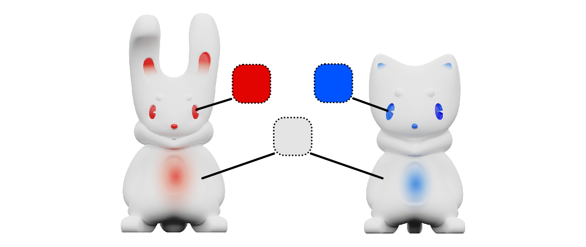
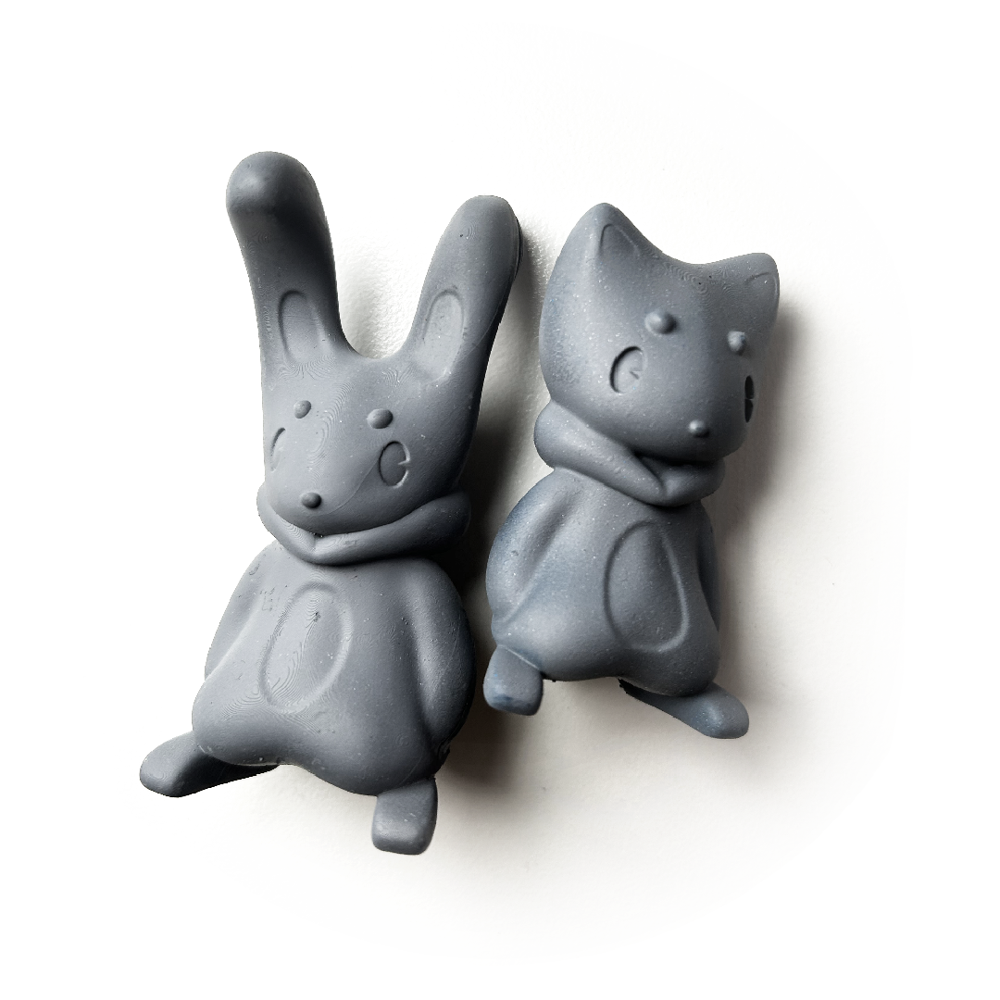
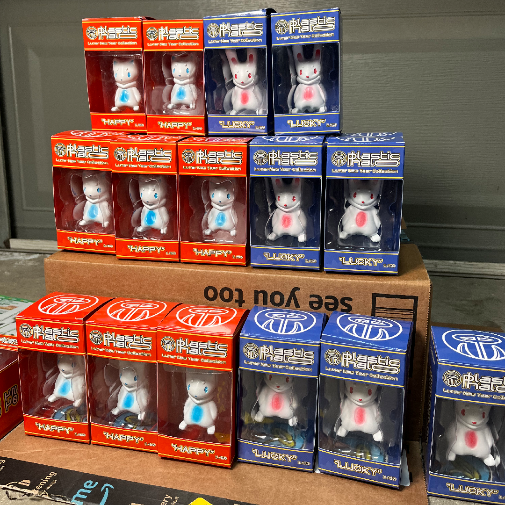

Lunar New Year Figurines
My Creative Process
Overview
Explore my journey in designing Lucky and Happy, inspired by the 2023 Chinese and Vietnamese Zodiac animals, the rabbit and the cat. Drawing from the rich traditions of Lunar New Year, I aimed to create culturally significant and gift-worthy products that embody the spirit of this vibrant holiday. My goal was to craft my own good fortune and share it with my loved ones.

Sketching
I wanted to convey the animal's fur and scruff in the same manner that people would wear a cozy hoodie. I want to define and refine the final product throughout the design process, but this is enough for me to start modeling.

3D Modeling
I start 3D modeling in Blender using primitive shapes, referencing my drawings. I work to optimize the design for 3D printing, focusing on minimizing time consuming printing errors.

After completing the low-poly design, I import it into ZBrush to add details and optimize the mesh (retopology) for more responsive integration with 3D slicing software. A high-detail, smooth mesh will ensure a product that's smooth to the touch!

I ensure a stable three-point ground contact by flattening out the bottom of the feet and tail. This prevents top-heaviness to guarantee secure home display without the risk of tipping.

As you can see I have also sculpted in the eyes, which was inspired by the 1920's rubberhose animation style.

Technical Sheets
I'll manage production myself, but I prepare tech sheets with finalized concepts for potential manufacturers. These sheets confirm design details, size, and color, aiding others interested in similar projects. I also provide multi-view renders for precise design replication.

Prototyping

I then 3D print some resin prototypes so I can have a good idea for how the designs feel as physical products. I make final decisions on the sizing and level of detail I should include in the final designs.
I prime the prints to make visible all the details and imperfections, as well as making sure our paint works with the resin. These will need to be lightly sanded and then primed again.
Processing by Hand / Bulk Production
I decided to print 100 figurines.

That I painted. By hand...
After sanding and priming, I mask the eyes, ears, and stomach area.
This technique enables gradient application with an airbrush.

The image shown is before applying a thin layer of acrylic gloss to protect the paint and make the colors pop.

I also produced a limited run of 10 figurines with a fuzzy texture using flocking powder, spray adhesive, and masking fluid.

Packaging Design
I designed the graphics in Illustrator and Photoshop.

Do you know anybody born in these years? The zodiac years are big milestones for those who celebrate the Lunar holidays.

I designed a window tuck box packaging for this figure series, which I will get produced at a packaging company.

I designed these blocks using 3D software, to use for creating clear plastic inserts with my vacuum forming machine.
The design features ridges, holes, and smooth edges to facilitate easy removal from the hot plastic. They are 3D printed with a heat-resistant resin, surpassing the capabilities of traditional filament.

These molds can be used in most plastic formers since they are printed with a heat-resistant resin, surpassing the capabilities of traditional filament.

Finished Products!
This part is consistently a source of excitement. It's truly fulfilling to observe my designs coming to life. I take product photos and clean them up in Photoshop for use on my webshop and social media in preparation for their release.
